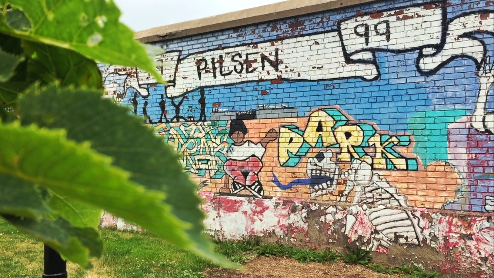

Pilsen Developers
Sacrifice Another Mural
Booming market that invigorated the Latino community in Pilsen half a century ago is now nibbling at it piece by piece.
An iconic mural in Pilsen was painted over in anticipation of the construction of luxury apartments in June and the drab overcoat sparked a public outrage in the neighborhood.
Recently, Andrew Ahitow of City Pads, the developer responsible for the change, has promised to invite the mural’s original artist back to create a new piece on the site.
The historic mural, located at 1831 S. Racine Ave., was created by artist Ray Patlan and Pilsen students more than 45 years ago, featuring activists such as Che Guevara and Rudy Lozano and artist Frida Kahlo as well as other heroic figures. It adorned the facade of the former Casa Aztlan, a community organization that served Latino residents for decades. On June 27, the artist, now 71 and living in Oakland, California, confirmed his plan of returning and repainting the mural as requested.
“They don’t understand the significance of the murals they’ve already painted over,” said Byron Sigcho, the director of Pilsen Alliance. The organization hosted a public meeting right after the mural had been whitewashed, to discuss repainting of the mural and the possible solution to the shutdown of the Casa Aztlan community center in 2013, due to foreclosure.
Free market is not free
“That’s the discussion we want to have, to have a discussion of what development can be and should be. It should be around families.” Sigcho said.
The mural movement in Pilsen started in 1963 and caught on in Little Village as well. “After a decade of Mexican immigrants flooding in the neighborhood, people started to search for their cultural identity,” said Luis Tubens, who has worked for the National Museum for Mexican Art for 10 years and is now a guide for walking tours of Pilsen Murals. “So the murals started to come in as a way to educate the people, and to mark flags ‘This is our neighborhood,’ but also for the purpose of resistance.”
The Latino community in Pilsen has witnessed a dramatic drop over the years. “More than 10,300 have left the neighborhood since 2000, a 26 percent drop. As of 2013, an estimated 28,835 Hispanic residents were living in Pilsen,” according to a 2016 study by University of Illinois at Chicago professor John Betancur and graduate student Youngjun Kim.
“When murals start to fall, you start to see this trajectory that now somebody is just coming to colonize this neighborhood that has been here for generations,” Tubens said.

Rising property prices and living expenses have been the main driving force behind the displacement. According to Trulia, the median home price in Pilsen has surged from $135,000 to $262,500 over the past five years.
Booming market that invigorated the Latino community in Pilsen half a century ago is now nibbling at it piece by piece.
“Free market is not free,” Sigcho said.
